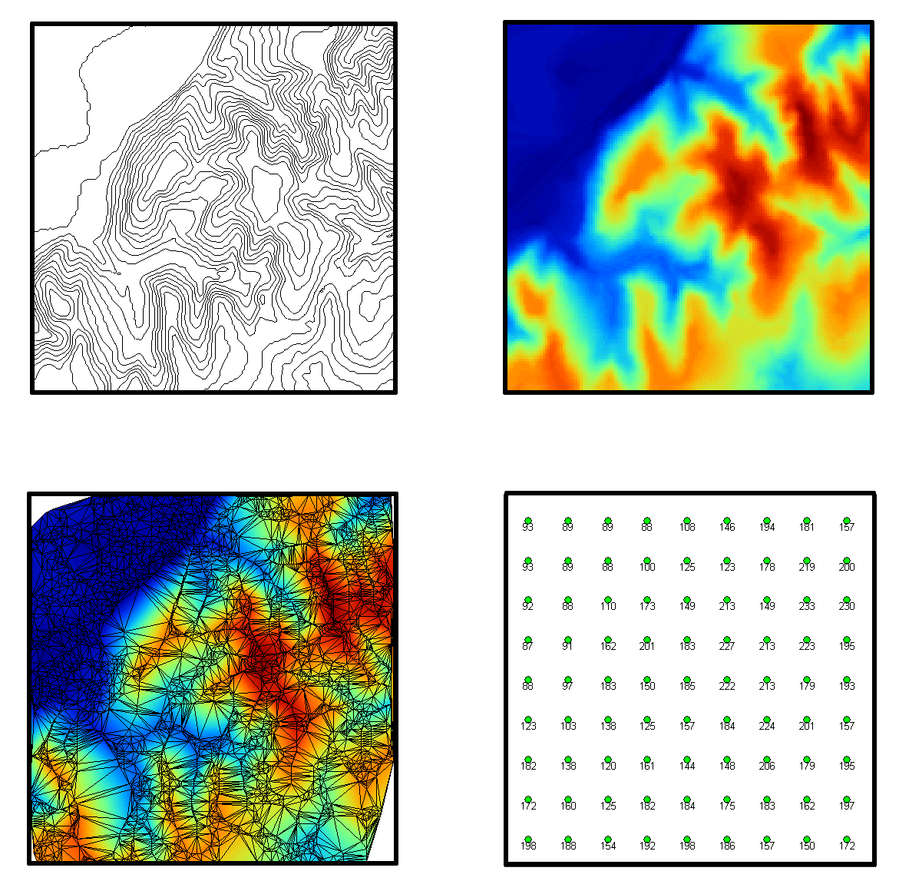
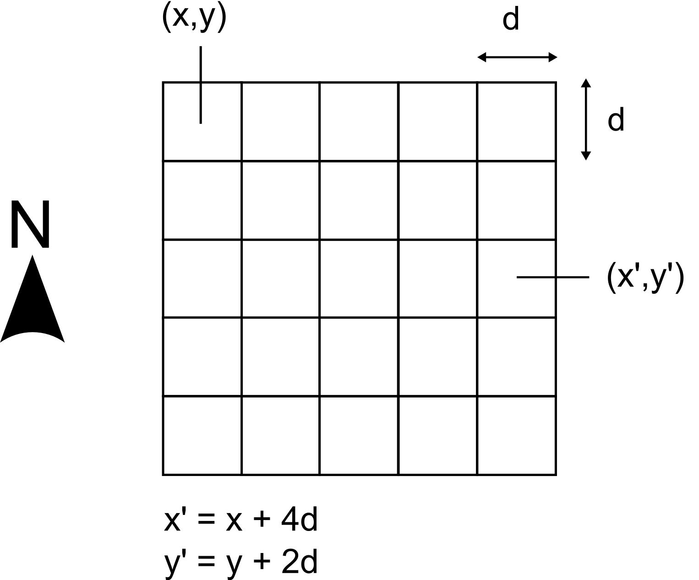
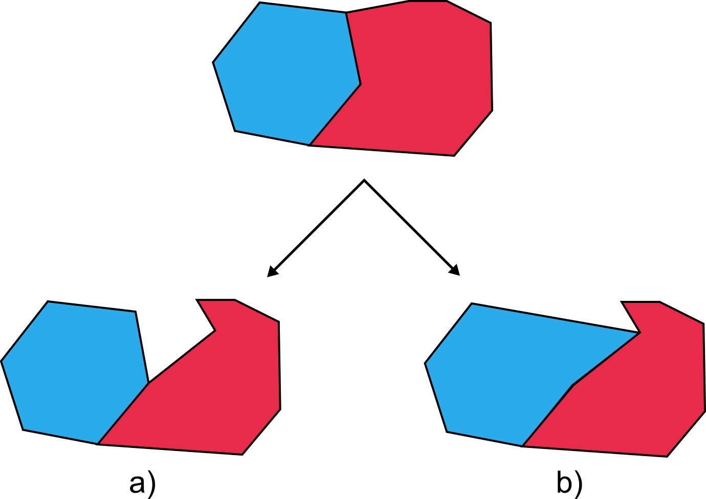
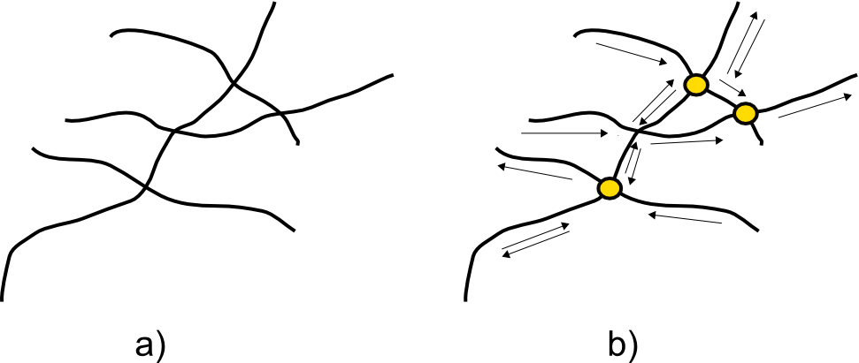
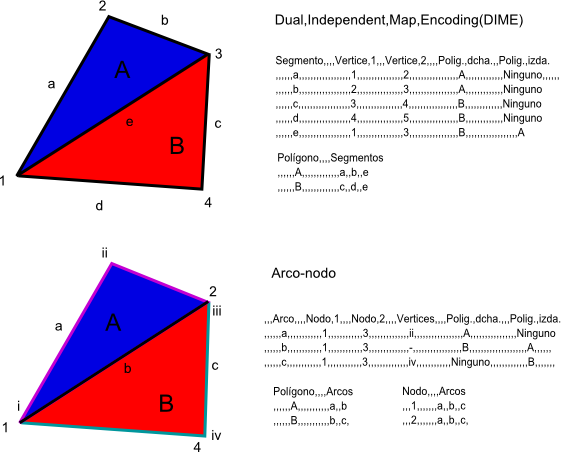
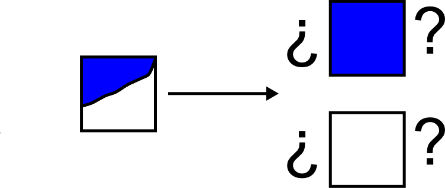
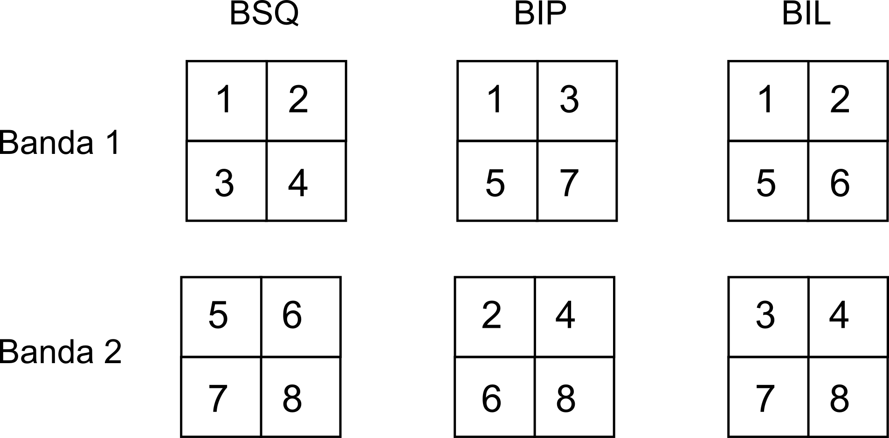
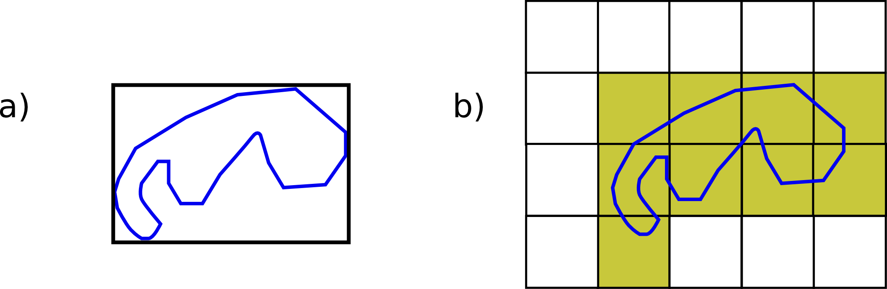

La realidad geográfica debe recogerse en un formato que pueda ser entendido por el ordenador y así susceptible de emplearse dentro de un SIG. En este capítulo se mostrarán los enfoques conceptuales y prácticos más frecuentes para llevar esto a cabo, que a su vez son los responsables indirectos de las arquitecturas subyacentes en los SIG. Para ello, se estudiarán los distintos tipos de información con los que trabajamos en un SIG y las formas más adecuadas de entender, interpretar y manejar esta.
Introducción
Los datos son, como ya sabemos, una parte imprescindible del SIG, ya que sin ellos las aplicaciones SIG y los restantes elementos que se encuentran en torno a estas no tienen utilidad alguna. Necesitamos conocer el área geográfica que estudiamos en un SIG (es decir, tener datos sobre ella), para así poder proceder a dicho estudio.
No obstante, convertir ese área geográfica y la información acerca de ella en un dato susceptible de ser incorporado a un SIG no resulta una tarea sencilla. Desde los orígenes de los SIG, una de las preocupaciones principales ha sido la de representar de la mejor manera posible toda la información que podemos extraer de una zona geográfica dada, de tal modo que pueda almacenarse y analizarse en el entorno de un SIG. Este proceso de representación, que ya desde el inicio planteaba problemas a los creadores de los primeros SIG, ha sido el responsable en gran medida de la arquitectura y forma de los SIG actuales, y a él se debe en buena parte el desarrollo que han experimentado tanto los SIG en sí como las disciplinas afines.
Describir los enfoques teóricos existentes para convertir la realidad relativa a una variable dada en una capa que la contenga de la forma más precisa posible y pueda ser empleada en un SIG es el objeto de este capítulo. Este proceso implica la construcción de un modelo (el dato geográfico), que representa la realidad y puede servir para conocer esta en profundidad a través de análisis que no se llevan a cabo sobre dicha realidad, sino sobre el modelo en sí.
El problema principal reside en el hecho de que el detalle real que encontramos en la naturaleza es prácticamente infinito, mientras que la representación y almacenamiento de esa realidad es finita. Se hace necesario extraer una serie de elementos y valores característicos, los cuales en ultima instancia se recogerán como valores numéricos dentro del SIG (pues son estos los que maneja un ordenador), y podrán interpretarse como el anteriormente citado modelo. El camino que lleva desde la realidad hasta ese conjunto de meros valores numéricos pasa por tres niveles:
Establecimiento de un modelo geográfico. Es decir, un modelo conceptual de la realidad geográfica y su comportamiento.
Establecimiento de un modelo de representación. Es decir, una forma de recoger el anterior modelo conceptual y sus características propias, reduciéndolo a una serie finita de elementos.
Establecimiento de un modelo de almacenamiento. Es decir, un esquema de cómo almacenar los distintos elementos del modelo de representación.
El modelo geográfico es un ente puramente conceptual (de alto nivel), mientras que el de almacenamiento es más un concepto técnico inherente a la naturaleza informática del SIG (de bajo nivel)
Modelos geográficos
El primer paso hacia la creación del dato geográfico implica el establecimiento de un modelo conceptual relativo a cómo se ha de interpretar la realidad geográfica. Se trata de conceptualizar el espacio estudiado, la variable tratada y la variación de esta a lo largo del espacio. Este modelo geográfico es un esquema mental que constituye una forma particular de entender el hecho geográfico en sí, pero que todavía no incorpora elementos relativos a su representación o almacenamiento.
Existen muchos modelos geográficos distintos, entre los cuales cabe destacar dos de ellos [Couclelis1992Springer]:
Campos
Entidades discretas
Campos
Un campo es un modelo de variación dentro de un marco n--dimensional, en el cual en cada punto dentro de dicho marco se tiene un valor de la variable estudiada. En su concepto matemático, un campo es una función de la forma $\varphi:\mathbf{R}^n\rightarrow \mathbf{R}^m$, esto es, una función que asocia cada punto de un espacio vectorial con otro en un espacio vectorial distinto.
En el caso más habitual, $m=1$, es decir, que a cada punto del espacio vectorial origen se le asocia un único valor escalar. Se tiene así lo que se denomina un campo escalar. La mayoría de las variables que se emplean en un SIG necesitan un único valor para describirse (piénsese en variables como la elevación, la temperatura o la presión atmosférica, que solo requieren de un número para expresarse), por lo que los campos escalares son los más habituales en el ámbito geográfico.
No obstante, también encontramos los denominados campos vectoriales, en el cual el espacio vectorial de destino es multidimensional. Por ejemplo, para definir el movimiento del viento en un punto geográfico no basta con un único valor, sino dos: la velocidad y la dirección en la que sopla dicho viento. Dentro de un SIG, es habitual recoger los campos vectoriales como un conjunto de varios campos escalares, cada uno de ellos en una capa distinta. Así, se tendría una capa con la dirección y otra con la velocidad, ambas magnitudes escalares. Operando de esta manera, la solución no es única, ya que el vector resultante puede definirse mediante su módulo y dirección (como en el caso anterior), pero también por sus propias coordenadas en la base del espacio vectorial destino (en el caso anterior, las componentes $x$ e $y$ del vector que indica el movimiento del viento).
El espacio vectorial de origen puede ser bidimensional, es decir, una función de la forma $f(x,y)$, representando $x$ e $y$ las coordenadas geográficas. Este es el caso habitual en las capas que se emplean en un SIG, donde las variables que estudiamos adquieren uno u otro valor en función de su posición dentro de un sistema coordenado de referencia.
Puede añadirse una tercera dimensión, de tal modo que los valores dependan no solo de la posición sino igualmente de la elevación. Se tendría una función de la forma $f(x,y,z)$. Para el caso, por ejemplo, de la temperatura del aire, esta depende no solo de la localización, sino también de la altura. Otro ejemplo puede ser el porcentaje de arena en el suelo, que depende de la localización pero también de la profundidad.
Igualmente, aunque en general es poco habitual en el marco de los SIG, puede añadirse la variable tiempo, teniéndose funciones de la forma $f(x,y,t)$ o $f(x,y,z,t)$
Por definición, un campo es continuo, ya que todos los puntos tienen un valor asociado. De igual modo, este valor es único, y no existe un elemento del espacio vectorial de partida que tenga asociados varios elementos del de destino, sean estos escalares o vectores.
Por su propia naturaleza los campos son ideales para modelizar variables que varían de forma continua en el espacio, entre ellas la practica totalidad de variables físicas del medio, tales como temperatura del aire, presión atmosférica, elevación, etc.
Los campos se asocian con las denominadas coberturas, termino este más empleado en el ámbito SIG. En una cobertura existe un valor único para todos los puntos de una región dada.
Entidades discretas
A diferencia de los campos, el modelo de entidades discretas no asocia a cada punto geográfico un valor, sino que concibe un entorno geográfico como un espacio vacío sobre el que se sitúan distintos elementos (entidades) que lo van rellenando. Cada una de dichas entidades posee unas características propias, constantes para toda ellas, que son las que conferirán sus propiedades particulares a los puntos que se sitúen en su interior.
Un punto puede no pertenecer a ninguna entidad, o bien a varias de ellas, según sea la disposición de estas. Para un espacio dado, las entidades pueden ser todos aquellos elementos geométricos existentes en el mismo, tales como puntos, líneas, polígonos o, en el caso de ser dicho espacio de dimensión mayor que dos, también volúmenes.
Es fácil ver que el modelo de entidades discretas no es tan adecuado como los campos para conceptualizar variables continuas, ya que la continuidad de estas es opuesta al esquema discreto planteado. No obstante, otras variables no continuas se modelizan mejor mediante entidades discretas, ya que la forma en que se presentan coincide en cierta medida con dichas entidades como unidades mínimas.
La presencia de vías de comunicación, por ejemplo, se puede asimilar perfectamente a este modelo. Se tiene un espacio vacío (sin vías), en el cual se disponen los distintos viales en una serie de localizaciones concretas. Hay puntos que no estarán afectados por ninguna entidad, mientras que otros (los situados en las intersecciones) lo están por varias de ellas.
Las variables de tipo nominal y alfanumérico —las cuales no son, como vimos, continuas— tales como el tipo de suelo en un punto o el número de parcela catastral al que pertenece dicho punto, también se adaptan bien al modelo de entidades discretas.
Otra diferencia entre los campos y las entidades discretas es que estas últimas son en general más sencillas de comprender como concepto fuera de un ámbito técnico. Los campos son conceptos matemáticos que requieren un mayor grado de abstracción, y para la mayoría de la gente no resultan tan claros. Como algunos apuntan [NCGIA], el lenguaje habitual contiene un numero mayor de expresiones y recursos para describir la realidad geográfica en base a entidades discretas que en base a campos o conceptos abstractos similares.
Modelos de representación
Los modelos geográficos nos ofrecen una concepción particular del espacio geográfico y sus atributos. En base a ellos, el siguiente paso es reducir las propiedades de dichos modelos a un conjunto finito de elementos, de tal modo que el registro de dichos elementos sirva para almacenar la realidad que los modelos geográficos describen. Para ello, empleamos los modelos de representación, también denominados modelos de datos.
Antes de entrar a describir los distintos modelos de representación, veamos algunos ejemplos que nos presentarán casos particulares de estos modelos, aclarando sus diferencias antes de proceder a una definición más detallada. En la figura \ref{Fig:MDE_modelos_representacion} pueden verse distintas formas de representar la elevación de una zona, la cual, como ya sabemos, es una variable continua y puede concebirse mediante un campo escalar. Por el contrario, la red viaria se adapta mejor a un modelo de entidades discretas, y se muestran en la figura \ref{Fig:Vias_modelos_representacion} sendas representaciones de esta variable según distintos modelos de datos. Mediante los ejemplos de estas figuras presentaremos los modelos de datos principales, así como su relación con los modelos conceptuales estudiados en el punto anterior.

Distintas formas de representar una capa con información altitudinal.
$$\label{Fig:MDE_modelos_representacion}$$
Distintas formas de representar una capa con información sobre una red viaria.
$$\label{Fig:Vias_modelos_representacion}$$
Comenzando con la elevación, encontramos cuatro distintas formas de representarla, a saber:
Curvas de nivel. La representación clásica empleada tradicionalmente en los mapas de papel. Se recoge la elevación en una serie de curvas, que marcan los puntos en los que dicha elevación es múltiplo de una cierta cantidad (la equidistancia). En el ejemplo propuesto, se muestran curvas con elevaciones múltiplos de 10 metros.
Una malla de celdas regulares, en cada una de las cuales se dispone un valor, que corresponde a las características de la zona ocupada por dicha celda. En este caso, cada celda tiene un valor de altura propio, que al convertirse en un color mediante el uso de una escala de colores, da lugar a la imagen mostrada.
Puntos regulares. Una serie de puntos regularmente espaciados. Existe información de la elevación solo en dichos puntos. La información se muestra como etiqueta asociada a cada punto.
Red de Triángulos Irregulares. Una Red de Triángulos Irregulares (TIN en sus siglas inglesas, de Triangulated Irregular Network), es una estructura en la cual se toman los puntos más característicos del relieve y en base a ellos se construye una teselación en triángulos con unas condiciones particulares. Cada uno de los triángulos posee unas propiedades comunes en cuanto a su relieve. Veremos más adelante en detalle este tipo de estructuras. Por el momento, basta recordar que los elementos básicos de esta forma de representación son triángulos.
Para el caso de las vías encontramos dos representaciones distintas:
Una malla de celdas como la citada en el caso anterior. Las celdas de vía tienen un valor (representado aquí en azul) distinto de las que se encuentran fuera de la vía (con valor representado aquí en blanco)
Un conjunto de líneas representando los trazados de las vías.
En este ultimo caso las celdas se han elegido de un tamaño excesivamente grande, con el fin de que pueda apreciarse de forma inmediata la diferencia existente. Veremos más adelante que, como no es difícil intuir, la representación mediante celdas no es tan adecuada para el caso de una capa de vías (aunque para el caso de la elevación da lugar a una imagen con un aspecto inmejorable y altamente informativo), cuando estudiemos los aspectos relativos a la precisión en los distintos modelos de almacenamiento.
Como vemos, para un mismo tipo de información existen diversas alternativas en cuanto a la forma de materializar la realidad y plasmar el modelo geográfico concreto. Estas formas las podemos clasificar en dos grupos principales: modelo de representación ráster y modelo de representación vectorial.
Si se han seguido los capítulos de partes anteriores, probablemente los términos ráster y vectorial no resulten extraños, ya que han aparecido con cierta frecuencia. Esto es así porque, además de definir dichos términos los principales modelos de representación de la información geográfica dentro de un SIG, se han venido utilizando tradicionalmente para definir a los SIG en sí, en función de si sus capacidades se hallaban más enfocadas al manejo y análisis de información en formato ráster o en formato vectorial. A día de hoy, esa diferencia no es tan patente y los SIG más habituales pueden trabajar con ambos indistintamente, pudiendo realizar las tareas que resultan más adecuadas de llevar a cabo tanto con uno como con otro tipo de representación.
En lineas generales podemos decir que el modelo ráster se basa en una división sistemática del espacio, la cual cubre todo este (a este concepto se le denomina se denomina teselación), caracterizándolo como un conjunto de unidades elementales (las celdas de las mallas vistas en los ejemplos). El modelo vectorial, por su parte, no divide el espacio completamente, sino que lo define mediante una serie de elementos geométricos con valores asociados, siendo la disposición de estos no sistemática, sino guardando relación con los objetos geográficos presentes en la zona de estudio.
En un principio, puede pensarse que el modelo ráster se asemeja al modelo geográfico de campos, mientras que el vectorial concuerda con el de entidades discretas. Aunque en cierta medida puede considerarse que así sucede y existe tal dualidad, no es del todo cierta esta equiparación, como discutiremos con algo más de detalle en los siguientes puntos.
De forma esquemática, los enfoques de los modelos de representación ráster y vectorial se muestran en la figura \ref{Fig:Esquemas_modelos_representacion}
Comparación entre los esquemas del modelo de representación vectorial (a) y ráster (b).
$$\label{Fig:Esquemas_modelos_representacion}$$
Podemos entender estos enfoques haciendo uso del esquema de Sinton presentado con anterioridad. En el modelo vectorial controlamos la definición de los valores asociados, y medimos la localización y forma de estos, dejando fijo el tiempo. En el modelo ráster, aunque la componente temporal también es fija, la componente que controlamos es la espacial (a través de la sistematicidad de la malla), mientras que medimos la naturaleza de los valores en cada una de las celdas.
Antes de pasar a la definición detallada de los modelos ráster y vectorial, mencionar que, como modelos principales empleados para la definición de capas de información geográfica, las expresiones capa vectorial y capa ráster son de uso habitual, y se emplearán de aquí en adelante tanto en este como en posteriores capítulos.
Modelo ráster
En el modelo ráster, la zona de estudio se divide de forma sistemática en una serie de unidades mínimas (denominadas habitualmente celdas), y para cada una de estas se recoge la información pertinente que la describe. Se puede ver esto en detalle en la figura \ref{Fig:Raster_closeup}, que muestra aumentada una porción la malla ráster de elevaciones de la figura \ref{Fig:MDE_modelos_representacion}, de modo que los límites de las celdas se hacen patentes y puede además representarse en cada una de ellas su valor asociado.
Celdas de una malla ráster con sus valores asociados.
$$\label{Fig:Raster_closeup}$$
Aunque la malla de celdas puede contener información sobre varias variables, lo habitual es que trate una única variable. Es decir, que se tenga un único valor para cada una de las celdas.
La característica principal del modelo ráster, y que le confiere gran parte de sus propiedades más interesantes, especialmente de cara al análisis, es su sistematicidad. La división del espacio en unidades mínimas se lleva a cabo de forma sistemática de acuerdo con algún patrón, de tal modo que existe una relación implícita entre las celdas, ya que estas son contiguas entre sí, cubren todo el espacio, y no se solapan. Por tanto, la posición de una celda depende de la de las restantes, para así conformar en conjunto toda la malla regular que cumple las anteriores características. Dicho de otro modo, el orden propio de las celdas, presente gracias a la división sistemática realizada, aporta un elemento adicional que las relaciona entre sí.
Como unidad mínima pueden tomarse elementos de diversas formas. La más habitual es mediante unidades de forma cuadrada, aunque también pueden ser formas rectangulares, o incluso triangulares o hexagonales [Diaz1986Reading]. No obstante, los SIG habituales se limitan a modelos de celdas cuadradas, y las implementaciones de otros modelos son de uso muy reducido y en aplicaciones muy especificas que en general no están orientadas al uso general ni disponibles de forma accesible al usuario común. Junto a esto, la información geográfica en formatos ráster distintos de la división en celdas cuadradas es prácticamente inexistente, haciendo más difícil el empleo de estos formatos en condiciones normales de trabajo.
De igual modo, existen representaciones ráster no regulares, en las que todas las unidades mínimas no tienen un mismo tamaño. Este tipo de representaciones no tiene apenas presencia en los SIG, pero son habituales en otros ámbitos tales como el de las representaciones 3D, con unos requerimientos bien distintos. Esto está relacionado a su vez con los modelos de almacenamiento ráster, que veremos más adelante en este mismo capítulo.
En todos los casos, la división en celdas no depende de la variable estudiada, y es una división geográfica. Esto lo diferencia de otras divisiones como el caso de la Red de Triángulos Irregulares, que, a pesar de ser una teselacion que cubre todo el espacio, está basada en la propia variable de elevación, y dicha división (número, forma y disposición de los triángulos) sería distinta en caso de que los valores de elevación fueran otros.
Siendo, pues, las mallas ráster de celdas cuadradas las más habituales, pasemos a ver algo más acerca de estas y su elementos básicos. Dos son los elementos principales que resultan necesarios para una definición completa de una capa ráster:
Una localización geográfica exacta de alguna celda y una distancia entre celdas, para en base a ellas, y en virtud de la regularidad de la malla, conocer las coordenadas de las restantes.
Un conjunto de valores correspondientes a las celdas.
En el modelo ráster no se recogen de forma explícita las coordenadas de cada una de las celdas, sino tan solo los valores de estas. No resulta necesario acompañar a dichos valores de un emplazamiento espacial concreto, pues hacen referencia a un elemento particular de la malla, la cual representa una estructura fija y regular. No obstante, sí que es necesario emplazar dicha malla en el espacio para después poder calcular las coordenadas particulares de cada celda.
Lo más habitual es definir el emplazamiento de una única celda (habitualmente la celda superior izquierda), una orientación fija, y una distancia entre las celdas (el paso de la malla). Como se muestra en la figura \ref{Fig:Elementos_capa_raster}, esto ya permite, mediante un sencillo cálculo, conocer las coordenadas de todas las celdas sin necesidad de almacenar estas.

La estructura regular de la malla ráster permite conocer las coordenadas de las celdas sin necesidad de almacenar estas, sino tan solo recogiendo algunos parámetros de la malla como la localización de una celda base ($x,y$), la orientación global o el tamaño de celda ($d$).
$$\label{Fig:Elementos_capa_raster}$$
La orientación de las capas ráster es habitualmente Norte--Sur, de tal modo que si pasamos de la primera a la segunda fila estamos descendiendo en latitud (este hecho sería matizable en función de la proyección empleada). Dicho de otra forma, la parte de arriba de la imagen es el norte, y la de abajo es el sur. Esta convención simplifica el trabajo con capas ráster dentro de un SIG y permite aplicar directamente la fórmula mostrada en la figura \ref{Fig:Elementos_capa_raster}.
No obstante, puede suceder que la fuente de datos original no se adhiera a este formato (por ejemplo, una fotografía aérea en la que el avión no volaba en dirección Norte--Sur o perpendicular, o una porción de un mapa escaneado que no tiene tampoco esa orientación). En tal caso, y puesto que los SIG trabajan en general con tal orientación en sus representaciones y a la hora de incorporar capas ráster, nos encontraremos con situaciones como la mostrada en la figura \ref{Fig:Malla_raster_rotada}
Aunque la zona de estudio no tenga orientación Norte--Sur, los SIG trabajan habitualmente con esta orientación, y las imágenes deben adecuarse a ello.
$$\label{Fig:Malla_raster_rotada}$$
En ella vemos cómo la orientación de la banda de estudio recogida es distinta de la Norte--Sur de la imagen, lo cual, unido a la forma rectangular que ha de tener dicha imagen, causa la aparición de zonas sin información (en negro). Esto implica por una parte la necesidad de almacenar un gran número de valores sin interés, y por otra la necesidad de especificar de algún modo que todas esas celdas que aparecen en negro en la imagen son realmente celdas para las cuales no se dispone de información. Esto último se suele llevar a cabo mediante la definición de un valor arbitrario que indique la falta de datos (denominado generalmente valor de sin datos), que codifica tal situación, de tal modo que pueden ignorarse las celdas con dicho valor a la hora de representar o analizar la capa ráster en cuestión.
El otro parámetro necesario junto con la orientación de la malla y la situación geográfica de una de sus celdas es el denominado tamaño de celda o tamaño de píxel, también conocido como resolución, pues, en efecto, su magnitud define la resolución de la capa. Un tamaño de celda mayor implica una menor resolución, y viceversa.
Además de servir para el cálculo de coordenadas de las celdas y definir la estructura de la malla, el tamaño de celda permite calcular áreas, ya que establece el área ocupada por cada celda. Asimismo, y como aspecto más relevante, el tamaño de celda determina la precisión con la que se recoge una variable dentro de una capa ráster, y puede considerarse como el equivalente conceptual a la escala de dicha capa. Por esta razón, es importante trabajar con capas ráster de un tamaño de celda adecuado para el tipo de análisis o tarea que quiera desarrollarse.
Así, un análisis microtopográfico en el cual resulta necesario registrar la variación del relieve a pequeña escala no puede llevarse a cabo con una capa de elevaciones con tamaño de celda de 100 metros, ya que toda la variabilidad menor a esos 100 metros se pierde. No debe olvidarse que cada celda registra un único valor de la variable, y esta se considera constante dentro de dicha celda. Un tamaño de 100 metros implicaría la recogida de un único valor para cada hectárea de terreno, lo cual no es suficiente en este caso.
Muchos son los factores que influyen en el tamaño de celda de una capa ráster, entre ellos las características de los datos iniciales con los que se ha creado dicha capa o los medios particulares con que estos han sido recogidos. En la figura \ref{Fig:Diferentes_resoluciones} pueden observarse dos imágenes aéreas del juego de datos de ejemplo (las imágenes son un tipo particular de capa ráster, como en breve veremos), con distinta resolución. Esta, al ser distinta, las hace válidas para uno u otro tipo de uso. Vemos claramente que en en la imagen en blanco y negro (cuyo tamaño de píxel es de 5 metros) se distinguen las distintas áreas de cultivo, mientras que en la imagen en color (con tamaño de píxel de 25 metros), estos no se distinguen. Todos aquellos análisis que requieran disponer de información por debajo de esos 25 metros, no podrán ser llevados a cabo con esta última imagen.
Para el caso de capas ráster de variables continuas, en la sección Eleccion_caracteristicas_capa_resultante_raster se da información detallada sobre cómo definir el tamaño de celda óptimo a la hora de crear estas a partir de datos de otra clase tales como datos vectoriales.
Imágenes de diferente resolución en función del sensor con que han sido obtenidas. Al tener distintos tamaños de píxel, servirán para distintos usos dentro de un SIG.
$$\label{Fig:Diferentes_resoluciones}$$
Una vez conocemos el formato ráster, podemos relacionarlo con lo que ya hemos visto relativo a los modelos geográficos. En primer lugar, y por sus propias características, puede pensarse que la representación ráster es más adecuada para variables de tipo continuo que varían a su vez de forma continua en el espacio geográfico. Es decir, es más próxima al modelo geográfico de campos que al de entidades discretas. Esto es así debido principalmente a que una capa ráster cubre todo el espacio, y ello favorece el estudio de dicha variabilidad. No obstante, no debe considerarse que el ámbito de las variables continuas y los campos es exclusivo de las capas ráster. De hecho, de las cuatro representaciones mostradas para el caso de la elevación, solo una de ellas es de tipo ráster.
Sí es cierto, no obstante, que el formato ráster es especialmente adecuado para el análisis de la información geográfica, en especial cuando esta es de tipo continuo. Esto es así porque el principal elemento de las capas ráster es, como ya se ha dicho, su estructura sistemática. Si a esta le unimos la regularidad que se presenta en la forma más extendida de representación ráster (la de celdas cuadradas regulares), tenemos un modelo óptimo para el análisis, que simplifica en gran medida este y hace más sencilla la implementación de los algoritmos correspondientes. Es por ello que, tradicionalmente, los SIG con mayor soporte para datos ráster han sido aquellos que presentaban a su vez un mayor número de funcionalidades de análisis en áreas tales como el estudio del relieve, el análisis de costes u otros similares.
No obstante, ello no restringe el alcance del formato. Variables que no resulta tan óptimo concebir como campos, tales como una red vial, también puede expresarse como una capa ráster, como hemos visto en la figura \ref{Fig:Vias_modelos_representacion}.
El caso de las imágenes
Un caso especial de capa ráster son las imágenes, de las que hemos visto ya un ejemplo al tratar el tamaño de celda. Tanto si estas proceden de un sensor digital o bien han sido escaneadas, los sensores correspondientes generan una estructura en forma de malla que se ajusta al modelo de representación ráster. Este hecho tiene gran importancia, pues facilita el análisis conjunto de imágenes y capas de datos con otro tipo de información, haciendo que este sea sumamente más sencillo, al compartir el modelo de representación.
Mientras que, como hemos visto en los ejemplos, una misma información se puede recoger en formatos ráster y vectorial, las imágenes se recogen únicamente en formato ráster, tanto por ser ese modelo mucho más adecuado, como por ser mucho más coherente con el tipo de información y la procedencia de esta.
El concepto de celda en una malla ráster es el equivalente al de píxel, bien conocido en el campo de las imágenes digitales. Así, cuando decimos que una cámara digital tiene tres megapíxeles, queremos decir que captura un total de tres millones de píxeles. De otra forma, la malla ráster que se genera tiene tres millones de celdas. Las imágenes con las que trabajamos en un SIG no se diferencian de las que tomamos con una cámara digital, salvo en el hecho particular de que representan una porción de terreno dentro de un sistema de coordenadas dado, pero la estructura es la misma: una malla de celdas (píxeles).
Otra particularidad de las imágenes es la presencia de bandas. Los valores recogidos en las imágenes indican de forma general la reflectancia en una determinada longitud de onda (esto se explica con mayor detalle en los capítulos Fuentes_datos y Procesado_imagenes). Puesto que el espectro de radiación puede subdividirse en distintos grupos, los sensores que toman estas imágenes recogen varias capas, una para cada uno de estos grupos. En lugar de almacenarse como un conjunto de capas separadas, es más frecuente que lo hagan en una única que contiene varias bandas, es decir, varios niveles distintos, cada uno de los cuales podría constituir por sí mismo una capa ráster.
Se trata de una diferencia más de tipo formal, pero de cierta importancia, puesto que no todos los SIG están preparados para manejar capas ráster con independencia de su número de capas. Imágenes con una única banda, o tres, son habituales y soportadas en la mayoría de implementaciones, mientras que números mayores de bandas no se encuentran soportados en muchos programas.
Todos estos conceptos se extenderán en el capítulo Fuentes_datos.
Modelo vectorial
El otro modelo principal de representación es el modelo vectorial. En este modelo, no existen unidades fundamentales que dividen la zona recogida, sino que se recoge la variabilidad y características de esta mediante entidades geométricas, para cada una de las cuales dichas características son constantes. La forma de estas entidades (su frontera), se codifica de modo explicito, a diferencia del modelo ráster, donde venía implícita en la propia estructura de la malla.
Si el modelo ráster era similar al modelo conceptual de campos, el vectorial lo es al de entidades discretas, pues modeliza el espacio geográfico mediante una serie de primitivas geométricas que contienen los elementos más destacados de dicho espacio. Estas primitivas son de tres tipos: puntos, líneas y polígonos.
Primitivas geométricas en el modelo de representación vectorial y ejemplos particulares de cada una de ellas con atributos asociados
$$\label{Fig:Primitivas_vectoriales}$$
Utilizando puntos, líneas o polígonos, puede modelizarse el espacio geográfico si se asocia a estas geometrías una serie de valores definitorios. La componente espacial de la información queda así en la propia primitiva (recoge la forma, posición y otras propiedades espaciales), y la componente temática queda en dichos valores asociados (Figura \ref{Fig:Primitivas_vectoriales}).
A la hora de definir las formas geométricas básicas, todas ellas pueden reducirse en última instancia a puntos. Así, las lineas son un conjunto de puntos interconectados en un determinado orden, y los polígonos son líneas cerradas, también expresables por tanto como una serie de puntos. Todo elemento del espacio geográfico queda definido, pues, por una serie de puntos que determinan sus propiedades espaciales y una serie de valores asociados.
Una única entidad (para la cual existirá un único conjunto de valores asociados) puede contener varias primitivas. Así, en un mapa mundial en que cada entidad represente un país, y tal y como se ve en la figura \ref{Fig:Casos_particulares_poligonos}, países como Canadá estarán representados por más de un polígono, pues no puede recogerse todo su territorio mediante uno único. Todos estos polígonos constituyen una única entidad, ya que todos perteneces al mismo país y tendrán el mismo conjunto de valores asociados.
Casos particulares de polígonos: a) varios polígonos disjuntos en una misma entidad (en este caso, mismo país), b) Polígonos con islas (huecos).
$$\label{Fig:Casos_particulares_poligonos}$$
Otro caso particular en las capas de polígonos son aquellos polígonos con islas (huecos). En este caso, se registran de la misma forma que en el caso de varios polígonos disjuntos. Se recogen los propios huecos como polígonos independientes, pero recogiendo de algún modo también la circunstancia de que estos polígonos no se suman a los polígonos existentes en esa entidad, sino que se restan. Así es, por ejemplo, para el caso del área total de polígonos de una única entidad, ya que el área del hueco debe ser restada de la total.
En la figura anterior, vemos como Sudáfrica presenta esta situación, ya que dentro del territorio del país hay zonas aislada que no pertenece a Sudáfrica, como por ejemplo la que constituye el Reino de Lesotho.
Como se muestra en la figura \ref{Fig:Poligonos_con_huecos}, el conjunto del territorio ocupado por Sudáfrica y las zonas interiores que no pertenecen al país no puede verse como un conjunto de polígonos sin más. Para representar Sudáfrica de forma aislada es necesario «restar» del polígono que engloba todo el territorio los polígonos respectivos a los países interiores. De no hacerlo así, un cálculo sencillo tal y como el del área de dicho país arrojará un resultado erróneo, pues considerará igualmente estas zonas interiores.
Los huecos de un polígono han de considerarse como parte de este.
$$\label{Fig:Poligonos_con_huecos}$$
En realidad, los huecos se registran como polígonos disjuntos que pertenecen a la entidad, aunque en lugar de representar un territorio que se añade, representan uno que se «quita». Una forma habitual de hacer esto es almacenar las coordenadas de los vértices de estos polígonos interiores en sentido inverso, de tal modo que su área es negativa. De esta forma, la suma total del área de los polígonos de la entidad es igual al área buscada}.
Dentro de un SIG, una capa vectorial puede contener un único tipo de primitiva. Así, tenemos capas vectoriales de puntos, de líneas y de polígonos, respectivamente. La elección de uno u otro tipo de capa para registrar una variable o conjunto de ellas ha de ser función del tipo de fenómeno que se pretende modelizar con dicha capa o la precisión necesaria, entre otros factores.
Por ejemplo, una capa de puntos puede representar un conjunto de ciudades, cada una de ellas definida como un único punto. Sin embargo, puede emplearse una capa de polígonos y no recoger una única coordenada (correspondiente, por ejemplo, al centro de la ciudad), sino el contorno o los límites administrativos de esta. Dependiendo del caso, será más apropiado elegir una u otra alternativa.
De igual modo, la capa de vías representada en la figura \ref{Fig:Vias_modelos_representacion} es una capa de líneas. Cada línea, como elemento teórico de ancho nulo, representa el eje de la vía. Si se requiere una mayor precisión en la definición de la superficie de rodadura de dichas vías, una capa de polígonos puede ser utilizada en lugar de una de líneas.
Lo anterior tiene una evidente relación con los conceptos de escala y generalización que vimos en el capítulo Fundamentos_cartograficos.
No debe pensarse que las capas vectoriales, sean del tipo que sean, se emplean únicamente para recoger fenómenos o elementos cuya forma coincide con la de las primitivas geométricas (es decir, puntos para recoger elementos puntuales, líneas para aquellos elementos con una dimensión mucho menor que la otra, y polígonos para el caso de superficies). Además de los ejemplos anteriores, debemos recordar que el modelo vectorial también sirve para representar campos y recoger variables tales como la elevación.
Así, en los ejemplos de la figura \ref{Fig:MDE_modelos_representacion} encontramos capas de puntos, lineas (curvas de nivel) y polígonos (TIN), todas ellas empleadas para representar la variable elevación. En ocasiones se emplean las primitivas para recoger objetos reales de forma similar, mientras que en otros casos sirven para plantear un modelo lógico y recoger variables que no se asemejan de modo alguno a las formas geométricas registradas.
A propósito de la capa de puntos regulares, cabe pensar que es similar en concepto y forma a la malla ráster, ya que es regular. Sin embargo, existen dos diferencias importantes: en primer lugar, en la capa de puntos hay zonas en blanco, de las que no sabemos su elevación, mientras que en la malla ráster las celdas tienen una superficie y cubren en su conjunto todo el espacio. En segundo lugar, si tenemos esa capa de puntos en un SIG, esta va a contener las coordenadas particulares de cada punto, ya que en sí las capas vectoriales no son regulares (pueden guardar alguna regularidad, pero no necesariamente), y por tanto es necesario, como hemos visto, registrar explícitamente sus coordenadas. De modo similar podríamos hacer una capa de polígonos cuadrados, pero seguiría sin ser una malla ráster, más aún si careciera de un elemento que veremos en breve: la topología.
La componente temática en el modelo vectorial
La forma en la que los modelos de representación separan las dos componentes de la información geográfica hemos visto que es bien distinta. En el modelo ráster se tiene un conjunto de valores (la componente temática), los cuales guardan una estructura dada, la cual por sí misma establece su disposición en el espacio (la componente espacial). En el vectorial, por su parte, la componente espacial se recoge explícitamente según una serie de puntos, la cual puede ser más o menos compleja en función de la complejidad de la entidad a representar o el detalle con que se recoja. A este conjunto de puntos se le relaciona después con una serie de valores, que son los que definen las propiedades de la entidad.
Estos valores, los atributos, a diferencia del caso ráster, suelen ser múltiples. Por ejemplo, dada una capa vectorial de países, podemos recoger valores asociados a cada país tales como su superficie, su población, el Producto Interior Bruto, el nombre de su capital o el idioma que se habla. Todo este conjunto de valores se asocian a una única copia de la componente espacial, y esta no debe repetirse para recoger cada uno de esos parámetros. En el modelo ráster, si tenemos $n$ capas distintas, en realidad estamos almacenando $n$ veces la componente espacial.
Por esta estructura particular, la componente temática se presta especialmente a almacenarse en una base de datos, siendo en la actualidad las más extendidas las denominadas bases de datos relacionales. Estas bases de datos se enlazan a la componente espacial y permiten una serie de operaciones(ver capítulo Consultas) y un manejo ventajoso de los atributos. Existen, por tanto, dos realidades: la relativa a la componente geográfica y la base de datos que gestiona los atributos, la cual permite análisis y operaciones independientes, del mismo modo que si no existirá una localización asociada a dichos atributos. Estas realidades pueden estar muy separadas, gestionándose en aplicaciones distintas y almacenándose en ficheros diferentes, con lo cual existe una división formal mucho más acusada que en el caso de las capas ráster, que se asemejan más a unidades de información autocontenidas.
En el caso de las capas ráster, no es necesario recurrir a una base de datos, y simplemente la representación del conjunto de valores de la variable en las distintas celdas sirve para el almacenamiento, análisis y manejo de la información. Como indica [Heywood1998Longman], esta forma de conectar las componentes espacial y temática es apta para el análisis, pero el manejo de los atributos requiere la presencia de una base de datos.
El establecimiento de las bases de datos, su manejo y su implementación dentro de un SIG es un tema altamente complejo. La forma en que el manejo de la componente temática y la gestión de la base de datos se establecen, así como la imbricación de la una en la otra, es la materia exclusiva del capítulo Bases_datos, donde todos estos temas se desarrollarán con profundidad.
Topología
Un elemento particular del modelo de representación vectorial es la topología. En términos matemáticos la topología estudia las características de los objetos geométricos que no varían al aplicar una transformación topológica tal como, por ejemplo, una transformación afín. Si tomamos un mapa y lo distorsionamos, los ángulos, las superficies y las distancias se ven afectadas. Sin embargo, otras propiedades tales como la adyacencia entre elementos o las relaciones entre estos se conservan. Por ejemplo, si una ciudad está dentro de una determinada provincia en un determinado mapa, no existe forma de distorsionar esta para lograr que dicha ciudad se encuentre fuera de la provincia.
En el ámbito de los SIG se entiende la topología desde un punto de vista menos estricto y más funcional. En general, se dice que una capa de información tiene topología si en ella se almacenan de algún modo las relaciones entre los distintos elementos que la componen. En caso contrario, la capa es de tipo puramente cartográfico, ya que los elementos que contiene no presentan relación entre sí, o al menos esta relación no está almacenada junto a la propia información de estos elementos.
En una capa ráster, las relaciones topológicas vienen implícitas en el propio modelo ráster, y son ajenas a la información como tal, dependiendo de la estructura de la malla de datos en sí. En el modelo vectorial, sin embargo, se recoge la información relativa a cada elemento de forma individual, y si las relaciones existentes no se registran de modo explicito, no se tendrá posteriormente información sobre ellas.
Disponer de topología en una capa vectorial es de gran importancia a la hora de llevar a cabo ciertos tipos de análisis, así como otros tales como la edición de los propios datos geográficos. La topología no aporta beneficio a la hora de representar una capa, pero sí a la hora de llevar a cabo análisis sobre ella [Herring1987Autocarto].
En la figura \ref{Fig:Topologia_edicion} se puede observar la diferencia existente entre editar una capa de polígonos con topología y una sin ella. En el primer caso, la información contenida en la capa antes de su edición nos informa no solo de la forma de cada polígono, sino también del hecho de que ciertos polígonos comparten bordes comunes y de que el conjunto de ellos cubre el espacio de forma completa (constituyen una teselación). Así, al modificar un punto en uno de los polígonos, todos aquellos polígonos adyacentes que comparten dicho punto modifican también su perímetro. Las capacidades de edición implementadas en el Sistema de Información Geográfica hacen uso de la información topológica a la hora de editar geometrías. En el segundo caso, sin embargo, esta información no existe, y no se pueden alterar los polígonos adyacentes, perdiéndose la teselación completa del espacio.

Diferencias entre la edición (desplazamiento de un punto) no disponiendo de topología (a) o con ella (b).
$$\label{Fig:Topologia_edicion}$$
La topología es en este caso un elemento que contribuye a la calidad de los datos, pues mantiene la coherencia espacial de estos y evita la aparición de elementos tales como polígonos de muy pequeño tamaño, frecuentes en la digitalización de entidades debido a las pequeñas imprecisiones que se presentan en el proceso, y que causan la presencia de falsos solapes entre polígonos.
No obstante, no todos los SIG incorporan capacidades de manejo y análisis de capas vectoriales con topología, y son menos aún los que implementan capacidades para crear dicha topología. En general, estas han quedado reservadas a las aplicaciones de alta gama, y el manejo de información vectorial en los SIG de escritorio no incluye de forma general lo relativo a la topología.
Otro ejemplo de proceso en el que se hace necesario el disponer de capas con topología es el análisis de redes (este se detalla en el capítulo Analisis_redes). Un mero conjunto de elementos geométricos (líneas en este caso), no nos da información sobre los posibles enlaces entre las vías que quedan representadas. Los puntos donde se cruzan dos vías pueden ser cruces o rotondas (es decir, puede pasarse de una vía a otra, existiendo conexión entre ellas), o bien pasos elevados o subterráneos donde una de las vías pasa por encima de la otra (y por tanto no existe comunicación entre ambas). Las circunstancias son muy distintas en función del tipo de cruce que exista, y por ello es imprescindible conocer esta información para efectuar un análisis de redes correcto.
Otro elemento que no se puede recoger sin topología son las direcciones de circulación. Habrá vías que puedan recorrerse en ambos sentidos, mientras que habrá otras que solo permitan movimiento de tráfico en una dirección. Saber en qué dirección podemos recorrer una vía es vital para poder plantear cualquier tipo de análisis, y esta es una información de la que no disponemos si nuestra red viaria no ha sido representada mediante un modelo con topología.
Estas circunstancias se recogen de forma esquemática en la figura \ref{Fig:Topologia_vias}

Capa de vías de comunicación sin topología (a) o con ella (b). Los puntos en este segundo caso indican conexiones entre vias, y son una representación visible de la topología existente. Las flechas indican la dirección de circulación y, al igual que sucede con las conexiones, solo están presentes si existe topología
$$\label{Fig:Topologia_vias}$$
Aunque, como se ha mencionado, las capas ráster en cierta forma contienen información topológica (se conoce la relación de adyacencia entre las distintas celdas), esta es débil, y no suficiente para análisis complejos como el de redes donde existen distintos elementos como los mencionados cruces o las direcciones de circulación. Aparte de la inherente peor disposición del modelo de representación para recoger una entidad espacial tal como una red, el modelo ráster no es óptimo para recoger la necesaria información topológica al respecto. Existen algunos intentos de adaptarlo a estas circunstancias (véase, por ejemplo [Husdal2000MsC]), pero en general no se encuentran implementados de forma habitual.
Modelo vectorial sin topología (spaguetti)
}
El modelo de datos vectorial almacena la información geográfica mediante una serie de entidades geométricas (lineas, puntos, polígonos), y una información asociada (los atributos). La forma en que estas geometrías se recogen es, no obstante, única, y en función del enfoque adoptado, permitirá el almacenamiento o no de propiedades topológicas relativas a dichas geometrías. Se tienen así submodelos de representación, cada uno de ellos con un esquema distinto de almacenamiento de los elementos individuales que constituyen una capa ráster.
Con independencia del submodelo, en todo caso las entidades se recogen mediante las coordenadas de sus puntos, pues como ya se vio toda entidad es reducible a un conjunto de puntos. La diferencia estriba en la forma en que dichos puntos se asocian a la representación de una entidad dada. Para el caso de una capa de puntos, no existe diferencia alguna, pero en el caso de líneas o polígonos sí la hay.
En el tipo más simple, se recogen únicamente las propiedades geométricas de cada entidad, almacenando para cada una de ellas el conjunto de puntos individuales que la componen. Esto aporta toda la información necesaria sobre la entidad, pero deja de lado la topología. Algunas propiedades topológicas pueden calcularse, tales como saber si un punto esta contenido dentro de un polígono o si dos rectas se cruzan, pero para otras no se dispone de información suficiente. Así, aunque podamos saber si dos líneas se cruzan, no podemos saber si este cruce implica una conexión real entre ellas de forma que pueda pasarse de la una a la otra o no, como vimos en la figura \ref{Fig:Topologia_vias}.
Esta forma de recoger las entidades vectoriales es similar a la que encontramos en un mapa clásico, en el cual podemos conocer la forma de un área dada o el recorrido que sigue una determinada carretera, pero no las relaciones existentes. Únicamente disponemos del trazo con el que se han dibujado estos elementos. Por esta razón, y como se ha dicho, un modelo vectorial sin topología es perfectamente válido para la representación de cualquier tipo de información en formato vectorial, pero no tanto para su análisis.
El almacenamiento de entidades basado en una mera lista de coordenadas de cada entidad se conoce popularmente como spaghetti, pues si pensamos en una capa de lineas sin topología que se entrecruzan en el espacio, esta se asemejan en cierta forma a un caótico plato de spaguettis sin orden ni relación entre ellos.
La mayor ventaja de este modelo es su simplicidad, razón por la cual es la habitual en muchos de los SIG más populares. Para muchos usuarios, es suficiente trabajar con datos vectoriales sin topología, pues las labores frecuentes que desarrollan, tales como consultas (capítulo Consultas) o creación de mapas derivados, no requiere conocer las relaciones topológicas existentes.
Gran parte de las operaciones que se desarrollan en un SIG no requieren topología, y por ello no es necesario asumir siempre el coste que implica trabajar con ella (mayor complejidad en general). Es por ello que incluso aquellos SIG que sí poseen la capacidad de trabajar con topología, también disponen de formas de trabajar sin ella, empleando datos que carecen de topología. Esto es así también debido a que mucha información disponible no incluye topología, ya que o bien esta no se incorporó en el momento de la digitalización, o bien el formato de fichero en el que se almacenó no soportaba la inclusión de topología.
En otros casos, la propia naturaleza de la variable que recogemos puede requerir ser almacenada sin topología, o bien puede ser que no existan relaciones topológicas que representar. Una capa de polígonos en las cuales se recojan las áreas de influencia de unos determinado fenómenos puntuales pueden perfectamente solaparse. No existe en este caso esa relación que hace que el conjunto de polígonos que las representan cubra la totalidad del espacio y cada punto pertenezca a una sola entidad. En este caso, un punto puede estar afectado por uno, varios o ninguno de dichos fenómenos puntuales, y por tanto pertenecer a una, varias o ninguna de las entidades poligonales que representan sus respectivas áreas de afección. Al modificar una de ellas (por ejemplo, si el fenómeno puntual que la origina varía su intensidad), las demás geometrías no deberían verse afectadas. No existe como tal una relación que deba recogerse en forma de topología.
Con topología
La alternativa al modelo vectorial sin topología (el que denominábamos spaguetti) es el almacenamiento explícito de las relaciones topológicas, recogiendo las coordenadas de los puntos que constituyen cada entidad, pero no mediante una simple lista para cada una de ellas. Recogiendo de forma individual toda la información espacial correspondiente a cada entidad, la topología se pierde, pues no se considera al conjunto de entidades como un conjunto en el cual existen relaciones internas, sino como una simple colección de cosas. Para recoger la topología es necesario considerar todos los puntos que constituyen las entidades, y después formar las entidades a partir de ese todo de puntos, considerando en el proceso que un mismo punto puede pertenecer a varias entidades. Esto es lo que se denomina frecuentemente un diccionario de puntos, ya que contiene las definiciones de estos (sus coordenadas) y en base a ellos se construyen las distintas geometrías.
Esta forma de considerar el conjunto de entidades evita, además, la redundancia en los datos. Por ejemplo, para el caso mostrado en la figura \ref{Fig:Topologia_edicion}, y en caso de no tener topología, el punto que es movido está almacenado dos veces, una por cada polígono. Al desplazarlo, solo se modifica una copia de dicha coordenada, la que pertenece al polígono editado, mientras que la otra permanece en su lugar. Si se dispone de topología, este punto se almacena una única vez, y al desplazarse se modifican las fronteras de todos los elementos (lineas o polígonos, según el caso) cuya frontera incluye dicho punto.
La denominación de diccionario de puntos que se mencionaba anteriormente es muy reveladora en este sentido. Si los puntos son como las palabras de un diccionario y los polígonos como frases o párrafos, basta pensar en lo poco práctico que sería escribir una frase en la que debiera definirse cada palabra al introducirla en dicha frase. Resulta mucho más adecuado (y ahorra esfuerzos al escritor), utilizar las palabras simplemente, y después definir estas en un diccionario en caso de que el lector no las conozca y necesite una referencia. Con el caso de los puntos sucede algo similar.
Existen diversos modelos para almacenar tanto las propias geometrías como sus relaciones inherentes, dos de los cuales se muestran en la figura \ref{Fig:Modelos_topologia} mediante sendos ejemplos en los que se codifican polígonos y líneas.

Dos modelos para representar la topología de líneas y polígonos. a) DIME, b) arco--nodo.
$$\label{Fig:Modelos_topologia}$$
El primero de estos modelos es un modelo de carácter histórico denominado DIME (Dual Independent Map Encoding), desarrollado originalmente por el US Bureau of the Census, y posteriormente mejorado en el modelo TIGER, empleado para la digitalización de cartografía urbana. El segundo es el modelo arco--nodo, probablemente el más difundido y popular en la actualidad, aunque a este respecto los planteamientos existentes son muy variados.
En este modelo existen dos unidades fundamentales: Los nodos, que son puntos donde se conectan varias líneas; y los arcos, que son lineas entre dos nodos. Estas líneas no han de ser rectas, ya que pueden contener en su recorrido vértices. Los vértices son en realidad los puntos que solo pertenecen a una entidad, mientras que los nodos pertenecen a varias de ellas.
Una capa de líneas se describe como un conjunto de arcos y nodos, de forma que, atendiendo a los nodos como enlaces entre las líneas, se pueden conocer las relaciones entre ellas. En el caso de polígonos, estos se forman con conjuntos de arcos que delimitan las fronteras. Los polígonos que son adyacentes comparten uno o más arcos, quedando establecida así mediante ellos la relación topológica.
En el caso del modelo DIME, sin embargo, vemos que cada linea recta entre dos puntos se trata como una unidad, es decir, que todos los vértices son considerados como nodos y los arcos se componen siempre de una sola línea. El arco es en realidad un segmento. En ambos casos, no obstante, cada arco tiene un inicio y un final —y por tanto una dirección—, y puede definirse un lado derecho y otro izquierdo según se avanza en dicha dirección. Como puede verse, también en ambos modelos se recoge explícitamente qué polígono, en caso de haber alguno, se sitúa a cada lado del arco.
La información que se recoge según estos modelos, vemos que se divide en bloques según los distintos niveles, desde los puntos, que han de recogerse en un diccionario de puntos (aunque este no queda reflejado en las tablas de la figura), pasando por los segmentos o arcos, y hasta los polígonos, definidos estos en base a los anteriores.
Con independencia del modelo, y sin entrar en más detalles, todos estos elementos en conjunto sirven para recoger las relaciones existentes entre los elementos, de tal modo que pueden llevarse a cabo también aquellas operaciones que no dependen exclusivamente de la posición, sino asimismo de otra serie de propiedades.
Dentro de los modelos existentes, encontramos asimismo variaciones en función de la tarea principal que se desee realizar. La eficiencia de cierto tipo de cálculos puede aumentarse notablemente si se elige un modelo de representación óptimo, como podemos ver si analizamos una de las operaciones más comunes: el cálculo de rutas óptimas entre dos puntos (los detalles sobre este cálculo se exponen en el capítulo Costes, aquí por el momento únicamente mostraremos sus implicaciones en los modelos de representación).
Para calcular la ruta óptima entre dos puntos dados de una red necesitamos conocer qué nodos de la red están conectados entre sí y por qué vías están conectados, ya que las características de estas condicionan el movimiento. La información necesaria para este cálculo puede almacenarse perfectamente según un modelo arco--nodo como el que ya conocemos, pero considerando las particularidades del análisis que queremos realizar, existen otros modelos más apropiados.
Por ejemplo, se puede tener en cuenta que los vértices de un nodo no tienen relevancia alguna. Si el tránsito se realiza entre dos nodos, a efectos del cálculo es indiferente que el tramo que los une tenga unos u otros vértices. Lo único que importa es saber que existe un tramo que los conecta y las características de ese tramo como, por ejemplo, el tiempo que cuesta recorrerlo o si conecta el nodo A con el B y el B con el A o solo lo hace en una de las direcciones anteriores. Por ello, en el caso del análisis de redes, la clave reside en almacenar de forma eficiente los nodos y las relaciones, pues estos son los elementos esenciales para efectuar los cálculos
Algunos modelos empleados comúnmente para el almacenamiento de redes son los siguientes [NCGIA]:
Matriz de incidencias arco--nodo
Matriz de adyacencias nodo--nodo
Listas de adyacencia
Estrella directa e inversa
La matriz de adyacencias nodo--nodo es sumamente sencilla, ya que simplemente, para un número $n$ de nodos, contiene una matriz de tamaño $n\times n$, en la que cada elemento ($i,j$) indica la existencia o no de conexión entre los nodos $i$ y $j$ y la naturaleza de dicha conexión. Si el elemento es igual a cero indica que no existe posibilidad de desplazarse directamente del nodo $i$ al nodo $j$. En caso contrario, el valor es igual a la propiedad que se desee recoger del tramo, por ejemplo el tiempo que se tarda en recorrer o la velocidad máxima a la que puede hacerse ese recorrido.
La gran ventaja de este método es su gran sencillez, que deriva en sencillas implementaciones de los algoritmos correspondientes.
El método de estrella directa e inversa, por su parte, no es tan sencillo (una descripción algo más detallada puede encontrarse en [NCGIA]), pero, no obstante, es el más eficaz [Ahuja1993Prentice], y sus tiempos de cálculo asociados son los menores de entre todos los anteriores.
Más allá de los detalles particulares del modelo de representación, lo importante es tener presente que existen diversas formas de representar el dato geográfico, y que cada una de ellas tiene sus ventajas e inconvenientes en relación con la función que los datos hayan de desempeñar.
TIN
Hemos visto cómo una capa vectorial con topología nos sirve para modelizar ventajosamente elementos como una red de vías o una teselación del espacio en, por ejemplo, diferentes clases de usos de suelo. Además de esto, la incorporación de topología sirve para mejorar la representación de campos mediante modelos vectoriales, permitiendo la aparición de modelos como los TIN, ya presentados con anterioridad.
Un TIN [Peuker1978ASP] es una red formada por un conjunto de triángulos interconectados, cada uno de los cuales representa a una zona de características homogéneas en lo que a la variable estudiada respecta. Debido a esto, y como puede verse en la figura \ref{Fig:MDE_modelos_representacion}, el número de triángulos varía según las características propias de la zona.
En aquellos lugares en los que se dé una gran variación (en caso de recoger el relieve será en las áreas más abruptas), se utiliza un gran número de triángulos para recoger toda esa variabilidad. Cuando, por el contrario, los valores no varían de forma tan notable (zonas de relieve más llano), pueden emplearse menos triángulos. Puesto que cada triángulo está formado, como todo polígono, por puntos, podemos decir que se necesitan menos puntos para almacenar un terreno si este es llano que si este es muy abrupto.
Cada triángulo tienen unas propiedades constantes, como corresponde al modelo vectorial. En particular, se considera habitualmente que todos los puntos dentro de un mismo triángulo constituyen un plano, con una pendiente y una orientación fija por tanto.
La topología del modelo permite llevar a cabo análisis diversos sobre un TIN, ya que para cada triángulo se tiene conocimiento de cuáles son los adyacentes a este, y es en el análisis de dichos adyacentes en el que se basan gran parte de los algoritmos. Este análisis resulta sencillo de implementar en una capa ráster, pues la propia estructura de la misma informa directamente de las celdas circundantes, pero en el caso vectorial requiere la presencia de topología para plantear un esquema similar de operación.
El análisis de los TIN no se desarrolla en detalle en este libro, pero resulta interesante recalcar en este punto que resulta posible de igual modo, y ello es debido a la presencia de topología en la propia estructura del modelo de representación.
Las particularidades del TIN hacen que existan sub--modelos principales para almacenar el conjunto de triángulos, distintos del habitual arco--nodo, y pensados específicamente para responder a las necesidades que los TIN demandan como modelos vectoriales para representar variables continuas (en este sentido, es algo muy similar al caso que veíamos anteriormente de las redes). Estos modelos son dos, principalmente:
Almacenamiento de los triángulos uno por uno, cada uno con las coordenadas de todos sus tres puntos (coordenadas tridimensionales, no planas) y un código de identificación, y almacenamiento de los códigos de los triángulos adyacentes.
Almacenamiento de los vértices y un código para cada uno de ellos, así como los códigos de los vértices a los que se encuentra conectado, en un orden establecido (horario o antihorario).
Más información sobre TIN puede encontrarse en [Mark1975GA]. La creación de TIN se trata con más detalle en el capítulo Creacion_capas_vectoriales.
Raster vs vectorial
Resulta obvio que las diferencias entre los modelos ráster y vectorial son muy notables, y que cada uno de ellos posee sus propias ventajas e inconvenientes. Desde los primeros tiempos de los SIG, ha existido una clara tendencia a separar ambas realidades en la implementación, de tal modo que los primeros SIG manejaban datos en formato ráster o bien en formato vectorial, pero no ambos. En cierta medida, parecía existir un conflicto entre ambos modelos, el cual ha perdurado aún hoy en algunos conceptos. Con el paso del tiempo, no obstante, la separación ráster--vectorial ha cambiado notablemente, y ha quedado claro que un SIG eficaz debe ser capaz de manejar todo tipo datos geográficos con independencia del modelo de datos empleado.
La comparación entre ambos modelos resulta necesaria para hacer un uso correcto de ellos, eligiendo en cada caso el más adecuado, y combinándolos de la manera óptima. Algunos aspectos a los cuales puede atenderse para comparar uno y otro modelo son los siguientes:
Planteamiento. Íntimamente ligados con los modelos conceptuales del espacio geográfico, los planteamientos de los modelos de representación ráster y vectorial son diferentes en su naturaleza. El modelo ráster hace más énfasis en aquella característica del espacio que analizamos (qué y cómo), mientras que el modelo vectorial da prioridad a la localización de dicha característica (dónde)
Precisión. El modelo ráster tiene su precisión limitada por el tamaño de celda. Las entidades menores que dicho tamaño de celda no pueden recogerse, y la variación espacial que sucede dentro del espacio de la celda tampoco.
Asimismo, existe una imprecisión en las formas. El detalle con el que puede recogerse la forma de una entidad geográfica según el modelo vectorial es, en la práctica, ilimitado, mientras que, como puede verse en la imagen \ref{Fig:Imprecision_raster}, el modelo ráster restringe las formas a ángulos rectos, ya que la unidad base es un cuadrado.
Imprecisión de forma en el modelo de representación ráster. La división del espacio en unidades cuadradas impide la representación fiel de entidades tales como curvas como la mostrada en trazo rojo en la figura.
$$\label{Fig:Imprecision_raster}$$
El perímetro de una entidad geográfica estará compuesto por líneas horizontales o verticales exclusivamente y, además, su longitud y la superficie que encierra serán respectivamente múltiplos del tamaño de celda y el área de dicha celda. Esta es la principal razón por la cual, si el uso principal que se le va a dar a una capa es su representación gráfica, deba optarse por el modelo vectorial. En caso contrario, y salvo que la resolución sea suficientemente alta, los mapas creados mostraran la falta de resolución y podrán distinguirse las unidades mínimas de la capas ráster (al igual que pasa en una imagen digital pixelada), teniendo un aspecto que no es el propio de un mapa, tal y como estamos acostumbrados a usarlo.
El hecho de que dentro de una celda el valor de la variable recogida sea constante, da lugar a ambigüedades como la mostrada en la figura \ref{Fig:Ambiguedad_raster}, donde una celda está ocupada por dos valores distintos, pero solo puede asignársele uno de ellos, debiendo establecerse algún criterio sistemático para llevar esto a cabo.
Un hecho similar sucede en el ejemplo de la capa de vías. Algunas celdas son atravesadas por más de una vía, pero esa información se pierde, ya que el tamaño de celda no es suficiente para recogerla. La celda en cuestión aparece como celda de vía, pero no sabemos cuántas diferentes la atraviesan, ni tampoco si entre ellas están enlazadas o no.

Ambigüedad en la asignación de valores a una celda en una capa ráster, debido al tamaño de esta, que condiciona la precisión con la que puede recogerse la realidad existente sobre el terreno.
$$\label{Fig:Ambiguedad_raster}$$
Hay que tener en cuenta, no obstante, que la precisión de la representación vectorial es, precisamente, de la representación como tal, es decir, del modelo, pero no del dato en sí que tenemos en dicho formato vectorial, el cual depende de otros condicionantes tales como la escala de trabajo. Existe siempre incertidumbre en los datos, y el modelo de almacenamiento no excluye esta circunstancia. Los aspectos relativos a la calidad de los datos, tanto para datos ráster como vectoriales, se desarrollan en profundidad en el capítulo Calidad_datos.
Volumen de almacenamiento. El número de elementos a almacenar es, en general, muy superior en el caso del modelo ráster. Esto es así debido a que toda la superficie a recoger se divide en las mismas unidades, independientemente de la complejidad de la variable en cada punto o de la necesidad de estudiarla con mayor o menor detalle en unos puntos que en otros. Para variables que se conciban mejor según un modelo conceptual de entidades discretas, el modelo vectorial resulta más adecuado, ya que todas las zonas sin entidades no es necesario registrarlas de modo explicito, mientras que en el modelo ráster estas deben registrarse de igual modo que aquellas en las que sí existe información relevante.
Los modelos de almacenamiento ráster que veremos en el siguiente punto solucionan en parte el problema de los grandes volúmenes de datos del modelo ráster, y son un elemento importante en la implementación eficiente del mismo.
Complejidad. La regularidad y sistematicidad de las mallas ráster hacen sencillo el implementar algoritmos de análisis, muy especialmente aquellos que implican el uso combinado de varias capas. Cuando estas capas están en formato ráster y existe coincidencia entre sus mallas de celdas, el análisis conjunto de estas resulta inmediato. Por el contrario, la irregularidad espacial de las capas vectoriales hace que la implementación de los mismos algoritmos sea sumamente más compleja si se trabaja con estas capas.
La sencillez de las capas ráster, tanto en su concepto como en su implementación, se ve apoyada además por el hecho de que una capa ráster se puede asemejar a una matriz, y por tanto aplicar sobre ella una serie de herramientas y elementos matemáticos en muchos casos bien conocidos y de fácil comprensión.
Existe de igual forma una distinta complejidad en términos de proceso y cálculo. Los algoritmos sobre una base ráster pueden ser costosos en términos de tiempo por la necesidad de aplicarlos sobre un número muy elevado de celdas y un gran volumen de datos (véase el punto anterior). Por el contrario, los algoritmos sobre una base vectorial son costosos debido a que las operaciones matemáticas que implican son más complejas y requieren mayores número de cálculos (aunque los volúmenes manejados puedan también ser notables).
Mas allá de las anteriores diferencias, a la hora de planificar un trabajo dentro de un SIG y elegir los datos que emplearemos y el modelo de representación ideal, lo importante es entender que no existe un modelo de representación idóneo de forma global, sino que esta idoneidad depende de muchos factores, como por ejemplo:
Tipo de variable o fenómeno a recoger. Como ya sabemos, algunas variables, en función de su variabilidad y comportamiento espacial, son más adecuadas para el modelo vectorial, mientras que otras lo son para el modelo ráster. Por ejemplo, en el caso de variables que requieran una intensidad de muestreo distinta según la localización (variables que resulta interesante estudiar con más detalle en unos puntos que en otros) puede resultar más lógico recogerlas de forma vectorial, pues el modelo ráster implica una intensidad de muestreo constante a lo largo del área estudiada.
Tipo de análisis o tarea a realizar sobre dicha variable. El uso que demos a una capa temática condiciona en gran medida el modelo de datos idóneo. Por ejemplo en el caso de una capa de elevaciones, su análisis se lleva mejor a cabo si esta información está recogida según el modelo ráster. Sin embargo, si el objetivo principal es la visualización de esa elevación en conjunto con otras variables, unas curvas de nivel pueden resultar más adecuadas, ya que, entre otras cosas, no interfieren tanto con otros elementos a la hora de diseñar un mapa con todas esas variables.
Contexto de trabajo. Por ejemplo, si queremos trabajar con imágenes, esto nos condiciona al empleo de datos ráster, ya que resulta mucho más sencillo combinarlos con las imágenes, las cuales siempre se presentan como capas ráster.
Así, en el desarrollo de un trabajo pueden aparecer circunstancias que hagan más adecuado utilizar el modelo ráster y otras en las que el modelo vectorial sea más idóneo. En tal caso, deben combinarse ambas, pues es de esta forma como se obtendrán mejores resultados. Un usuario de SIG no debe limitarse a trabajar de forma general con un único modelo de datos, con independencia del tipo de tarea que desempeñe, pues en cualquier caso ambos modelos de datos pueden aportar alguna ventaja.
Por último, es importante tener en cuenta que existen procedimientos para convertir entre los formatos ráster y vectorial, de forma que el disponer de datos en un modelo de representación particular no implica que debamos desarrollar nuestro trabajo sobre dichos datos directamente, sino que podemos efectuar previamente una conversión. Los capítulos Creacion_capas_raster y Creacion_capas_vectoriales tratan estos temas en profundidad.
Modelos de almacenamiento
Los modelos de almacenamiento son el ultimo escalón en la cadena de etapas distintas que llevan desde la realidad existente al conjunto de simples valores numéricos que almacenamos y manejamos en un SIG y que modelizan dicha realidad. Los modelos de representación definen una forma de recoger la realidad mediante unidades básicas (sean estas celdas en una malla, o bien primitivas geométricas definidas de una u otra manera), mientras que los modelos de almacenamiento plantean básicamente un esquema de cómo convertir dichas unidades en valores numéricos de la forma más eficiente. Es decir, cómo escribir dichos valores en un soporte digital o guardarlos en la memoria del ordenador de la mejor manera posible.
Los modelos de almacenamiento deben atender principalmente a dos necesidades básicas, que son las que definirán su idoneidad para cada tarea y tipo de dato:
Minimizar el espacio ocupado por los datos.
Maximizar la eficiencia de cálculo.
La primera necesidad es especialmente importante, pues, como ya se ha dicho, los datos ráster son con frecuencia muy voluminosos. Un modelo de representación que minimice el tamaño de los datos, unido a un manejo óptimo de memoria, son requisitos de suma importancia para todo SIG que maneje datos ráster, máxime considerando los grandes volúmenes de datos que hoy en día se manejan, tales como los correspondientes a imágenes de alta resolución.
La necesidad de maximizar la eficiencia de cálculo afecta principalmente a las representaciones vectoriales ya que en ellas las operaciones son complejas. La forma en que se estructuran los valores de cada entidad ha de minimizar el numero de accesos necesarios a estos, para de este modo obtener un mejor rendimiento en todas las operaciones de análisis.
Modelos para representaciones ráster
El principal problema relativo al almacenamiento de capas ráster se presenta para el conjunto de valores de las distintas celdas, que constituye la parte más voluminosa de la información recogida. Las coordenadas de las celdas de referencia o el tamaño de celda, por su escaso volumen, no conllevan dificultad alguna, y es en el almacenamiento de la malla de celdas en sí donde se encuentran las diferencias entre unos y otros modelos.
La forma más inmediata de almacenar una capa ráster es simplemente almacenar sus valores uno a uno, en una estructura similar a la que la propia capa representa. Para el caso más habitual de capas con celdas cuadradas, sabemos que la malla de datos correspondiente se puede asimilar a una matriz, con las implicaciones que esto tiene a la hora de su manejo. Así, la forma más directa de recoger una malla de datos ráster es mediante una matriz de datos. Esta forma de almacenamiento tiene las siguiente ventajas [Egenhofer1991Maguire]:
Formato muy intuitivo. La mayoría de desarrolladores está familiarizado con el concepto de matriz y con las operaciones de calculo matricial que pueden aplicarse sobre estas.
Sencillez en la implementación. Los lenguajes de programación soportan sin problemas el uso de matrices bidimensionales y una serie de operaciones básicas sobre ellas.
Estructura. Las mismas operaciones pueden aplicarse sobre todos los valores de la matriz de igual modo (todas las posiciones de la matriz son iguales desde este punto de vista), lo que simplifica la implementación de operaciones.
Iterabilidad. Resulta igualmente sencillo recorrer la matriz e iterar sobre la misma, lo cual refuerza lo anterior y simplifica aún más la implementación de todo tipo de procesos.
No obstante, el almacenamiento de todos los valores de forma idéntica ignora el hecho de que pueden existir valores similares en zonas concretas, que pueden recogerse de formas mucho más óptimas que una serie de números iguales. En otras palabras, y de modo similar a como ocurre con el propio modelo de representación ráster, la estructura regular que confiere las ventajas es también la responsable de la mayor parte de los inconvenientes.
Como veremos en el capítulo Analisis_espacial, las zonas próximas entre sí (es decir, en el caso de una capa ráster, las celdas próximas entre sí), tienden a tener valores similares, en lo que se conoce como autocorrelación espacial. No considerar este hecho lleva al almacenamiento de información redundante, y ese es precisamente el principal problema del almacenamiento directo de una capa ráster mediante una matriz. Almacenando explícitamente todos los valores de la malla se desperdicia en muchos casos una gran cantidad de espacio (sea este en memoria, disco u otro soporte cualquiera).
Podemos ver dos ejemplos claros de esto en las figuras \ref{Fig:Vias_modelos_representacion} y \ref{Fig:Malla_raster_rotada}. En la primera, existen únicamente dos valores: los correspondientes a las celdas sobre las que se sitúa una vía, o los correspondientes a las celdas donde estas no aparecen. Estos últimos ocupan la gran mayor parte de la capa, y lo hacen en bloque, de tal forma que almacenándolos individualmente se acaba teniendo una matriz de datos donde la practica totalidad de ellos son idénticos. Como es fácil de entender, este forma de proceder no es la más adecuada, al menos en términos de volumen de almacenamiento.
En la segunda imagen, las zonas que aparecen como consecuencia de la rotación de la imagen no contienen datos (esto es, contendrán el valor arbitrario que codifica la falta de datos). Estas zonas también constituyen grandes bloques de celdas contiguas, con lo que el almacenamiento de todos los valores también es una solución altamente redundante, especialmente en estas zonas fuera de la imagen como tal.
La solución más habitual para considerar la redundancia de valores y lograr una compresión eficaz de los datos es la técnica denominada Run--Length Encoding. Esta técnica sencilla codifica una serie de $n$ valores idénticos como un par de valores, el primero de los cuales representa el valor dicho que se repite $n$ veces, y el segundo es el número de veces que se repite, esto es, $n$.
Así, si la primera fila de la capa de vías en formato ráster no aparece ninguna celda de vía, todas las celdas de dicha fila contendrán el valor con que se codifica la ausencia de estas (sea, por ejemplo, el valor 0). El almacenamiento directo de todos los valores de la fila requeriría tantos valores como columnas existan (sea $n$ el ancho de la fila), mientras que utilizando Run--Length Encoding, bastaría con almacenar el par (0, $n$).
A la hora de tratar el conjunto de todas las celdas, se define un orden en el que recorrerla, denominado orden de barrido o de escaneo (Figura \ref{Fig:Orden_escaneo}), de tal modo que la matriz bidimensional queda reducida a una cadena de valores, es decir, a un vector unidimensional. Los distintos trozos de esa cadena se van codificando según el esquema anterior, de tal modo que cuando aparecen muchos valores iguales consecutivos, estos pueden sustituirse ventajosamente por un único par de valores.
Ordenes de escaneo. a) fila a fila sin retorno, b) fila a fila con retorno.
$$\label{Fig:Orden_escaneo}$$
La forma más sencilla de recorrer la imagen es hacerlo por filas, empezando por la fila superior y desplazándose de derecha a izquierda (Figura \ref{Fig:Orden_escaneo}a). No obstante, el salto que se produce al final de cada fila suele implicar una discontinuidad en los valores. Invirtiendo la dirección del recorrido en cada fila, se tiene el orden mostrado en la figura \ref{Fig:Orden_escaneo}b, el cual suele tener como resultado mayores niveles de compresión de datos, ya que la cadena resultante de recorrer la imagen contiene trozos generalmente de mayor tamaño.
Un esquema de barrido más complejo es el basado en el denominado orden de Morton [Morton1966IBM]. El orden de Morton (también conocido como orden Z), se basa en una curva de carácter recursivo, que recorre las celdas de la matriz siguiendo tramos en forma de Z, de ahí el nombre. En la primera iteración se divide el conjunto de celdas en cuatro bloques, los cuales se recorren siguiendo el antedicho recorrido en Z. Si los bloques contienen a su vez más de una celda, se siguen subdividiendo a su vez de forma idéntica, y así hasta que no pueda continuarse este proceso.
La matriz que contiene los valores de orden de Morton (el orden en que se visita cada celda según el esquema anterior), se conoce como Matriz de Morton, la cual ya citamos por su importancia histórica en el capítulo Historia.
Un ejemplo sencillo de barrido de una capa ráster según órdenes de Morton. Los valores en las celdas no indican los valores de la variable, sino el orden en que se visita dicha celda según este esquema de barrido
$$\label{Fig:Orden_Morton}$$
Un ejemplo de este orden de barrido aplicado a una pequeña matriz puede verse en la figura \ref{Fig:Orden_Morton}.
Una estructura más avanzada son los denominados Quadtrees o árboles cuaternarios. Estas estructuras también dividen el espacio en cuadrantes sucesivamente, pero lo hacen con más profundidad en aquellas zonas que así lo requieran por contener mayor número de elementos y necesitar mayor resolución. En el caso de una capa ráster, se requerirá más detalle siempre que todas las celdas dentro de un cuadrante no tengan el mismo valor. En el caso más extremo, se ha de descender hasta el nivel de una sola celda, pero puede ser que un bloque de celdas contiguas tenga el mismo valor, en cuyo caso el cuadrante correspondiente las engloba a todas y las define con dicho único valor, sin necesidad de subdividirse más. De este modo, se adapta el modelo de almacenamiento a la propia estructura de la capa y al comportamiento que en esta muestra la variable estudiada.
Un ejemplo gráfico de un árbol cuaternario puede encontrarse en la figura \ref{Fig:Quadtree}. Los arboles cuaternarios son empleados también en los índices espaciales, asociados a representaciones vectoriales, que veremos en Indices_espaciales (de hecho, puede apreciarse que la figura anterior representa la aplicación de un árbol cuaternario a un conjunto de puntos, no a una capa ráster, aunque el concepto es el mismo y su aplicación a este segundo caso se realiza como ya se ha mencionado previamente).
Los quadtrees son estructuras complejas, y no profundizaremos más en su descripción dentro de este capítulo. Para el lector interesado, la definición original de esta estructura de datos puede encontrarse en [Finkel1974Acta].
Ejemplo de un árbol cuaternario. En las zonas con más variabilidad (mayor densidad de puntos), los cuadrantes se subdividen hasta una profundidad mayor. La estructura es tal que cada cuadrante tiene dentro a lo sumo un punto. (Tomado de Wikipedia)
$$\label{Fig:Quadtree}$$
Es importante reseñar que cuando la capa ráster contiene una información tal como una red viaria, la cual es susceptible de presentar valores idénticos en celdas contiguas, la codificación de tipo Run--Length —con cualquiera de los esquemas de barrido anteriores— es ventajosa. Sin embargo, no lo es tanto cuando se trabaja con otro tipo de variables.
En una capa con valores de elevación, las celdas próximas tendrán valores parecidos pero no idénticos, con lo que no podrá sacarse partido a esta forma de almacenamiento. Más aún, en estos casos el volumen ocupado por los datos no solo no disminuye, sino que aumenta. Es por ello que los SIG han de implementar igualmente la capacidad de poder trabajar con uno u otro modelo de almacenamiento según los casos, bien sea por elección directa del usuario o tomándose de forma automática el que el propio sistema considere más adecuado en cada ocasión.
Aunque el mayor problema de las capas ráster es su gran volumen, también existen diversas alternativas enfocadas a mejorar la velocidad de acceso a datos y el rendimiento de las operaciones sobre estas capas. Estas alternativas afectan a las imágenes con múltiples bandas, ya que estas, como dijimos, se recogen en un único fichero, en el cual se incorpora toda la información de las distintas bandas.
La forma en la que las bandas se tratan dentro del fichero y el modo en que se ordenan los píxeles de las distintas bandas, ambas definen el esquema de almacenamiento, presentando cada uno de ellos una serie de ventajas de rendimiento en función de la actividad principal que se vaya a desarrollar con la imagen. Tres son los esquemas principales:
Band Sequential (BSQ). Los valores se almacenan por bandas. Es decir, primero todos los píxeles de la banda 1, después los de la banda 2, y así sucesivamente. Este tipo de esquema da prioridad a la componente espacial, ya que permite acceder rápidamente a todo el espacio cubierto por una banda, puesto que los píxeles de dicha banda se encuentran almacenados en posiciones contiguas.
Band Interleaved by Pixel (BIP). Los valores se almacenan ordenados por posiciones de píxel. Es decir, primero se almacenan todos los valores correspondientes al píxel (0, 0) (en todas las bandas existentes), después los correspondientes al (0,1), y así sucesivamente.
En caso de que lo que interese sea, para un píxel dado, conocer toda la información disponible (su valor en todas las bandas), el esquema BIP es más ventajoso, ya que permite accesos rápidos a este tipo de información, sin necesidad de «saltar» de un valor a otro como sucedería en el caso del esquema BSQ. A nivel de acceso, se prima la información espectral sobre la espacial.
Band Interleaved by Lines (BIL). Es un esquema intermedio en el que se recogen los valores por filas. Esto es, primero la fila 1 de la banda 1, luego la de la banda 2, y así sucesivamente. Posteriormente se recoge la fila 2 para todas las bandas, y de este modo hasta cubrir toda la imagen. Se trata de un esquema intermedio entre los anteriores, permitiendo un acceso rápido tanto a la información espacial como a la información espectral de las bandas.
La figura \ref{Fig:Esquemas_almacenamiento_bandas} se muestra un ejemplo muy sencillo de los anteriores esquemas. Para una imagen de $2\times 2$ celdas y dos bandas, se recoge el orden en que se almacenaría capa valor según cada uno de dichos esquemas.

Esquemas de almacenamiento para imágenes multibanda. Los números indican el orden en que se almacena cada valor.
$$\label{Fig:Esquemas_almacenamiento_bandas}$$
Modelos para representaciones vectoriales
Al igual que para el modelo ráster, existen para el modelos vectorial diferentes alternativas a la hora de almacenar los elementos que componen una capa. En realidad, ya hemos visto dentro de este capítulo algo que se asemeja a un modelo de almacenamiento, pues los modelo topológicos como DIME o el modelo arco--nodo, o los detallados para el caso particular de las redes, todos son en realidad esquemas de almacenamiento para el conjunto de piezas que componen esa estructura topológica que se quiere almacenar. No obstante, también tienen algo de modelos de representación, pues existe variación en la forma en que conciben las partes de cada entidad (arcos entre dos nodos con o sin vértices intermedios, según el modelo).
En realidad, la razón por la que se han presentado en una sección anterior es porque de ese modo ayudaban a comprender mejor la existencia o no de topología en una representación, y ese aspecto resulta más importante para el estudio de los SIG que los modelos de almacenamiento. Estos, como se ha dicho, están a un nivel más bajo y alejado del usuario.
En general, los modelos de datos vectoriales no buscan tanto la disminución de volumen de los datos como la obtención de una mayor eficacia en las operaciones y una simplificación de estas. Lógicamente, si los datos tienen un volumen menor, el tiempo que cualquier operación sobre ellos implica también ser menor. Aún así, la diferencia principal para este tipo de datos reside en la disminución de la complejidad en que estos se almacenan, disminuyendo las operaciones a realizar, así como la complejidad de la implementación de los correspondiente algoritmos (ambas habitualmente elevadas).
Para mejorar el rendimiento de las operaciones que trabajan con datos vectoriales, un factor clave es mejorar el acceso a los datos, de forma que, cuando se necesite acceder a unos datos concretos, estos puedan «encontrarse» de forma fácil. Por este motivo, un elemento importante en la representación de los datos vectoriales son los denominados índices espaciales.
El concepto de índice cuando se habla de datos es similar al concepto de índice referido a un libro como este. Aquí tienes un ejemplo muy sencillo para que lo comprendas mejor: si vas al principio de este libro, puedes ver su índice y saber dónde empieza este capítulo, de forma que si estas interesado en modelos relacionados con la información geográfica, sabes rápidamente que es en este bloque de páginas donde debes buscar lo que te interesa. Si no existiera ese índice, tendrías que ir revisando todas las páginas hasta que llegaras al principio de capítulo y te dieras cuenta de que aquí es donde está lo que buscas. De igual modo, si vas al final de este libro y buscas el término índices espaciales, verás que aparece esta página junto con otras en las que aparece dicho término. Si no tuvieras ese índice, tendrías que revisar palabra por palabra para saber en qué partes de este libro se habla de índices espaciales.
Estos sencillos ejemplos muestran situaciones similares a las que aparecen en el uso habitual de un SIG, en las cuales trabajamos sobre una parte del total de los datos. Igual que buscamos un capítulo o un único término, podemos querer, por ejemplo, todas las entidades de una capa que están en una zona particular del espacio. Disponer de un índice acelera el proceso de localizar esas entidades que nos interesan. Por trabajar con información espacial, tales índices se denominan índices espaciales.
Muchos de los procesos que veremos en la parte dedicada al análisis necesitan este tipo de índices para poder ejecutarse con un rendimiento adecuado. A medida que veamos estos procesos, se comprenderá mejor por qué la existencia de índices espaciales resulta necesaria e incluso imprescindible cuando disponemos de datos de gran volumen. En el capítulo Consultas veremos información más detallada sobre la utilidad de los índices espaciales, ya que estos son vitales para la realización de consultas espaciales, que son tratadas en dicho capítulo.
Como ya hemos dicho, el objetivo de este tipo de estructuras para representar los datos espaciales no es disminuir el tamaño, sino mejorar el rendimiento de las operaciones sobre ellos. De hecho, y al contrario que en el caso de los modelos de representación ráster, en este caso no disminuye el espacio que ocupan los datos, sino todo lo contrario, ya que este aumenta. Un índice espacial es información adicional que incrementa la utilidad de dichos datos. Exactamente del mismo modo que el índice de este libro, que no sustituye al texto que ahora mismo estas leyendo, sino que se añade a este y te ayuda a manejarte a través de él y sacarle más partido.
La creación del índice espacial supone la creación de una estructura espacial en la cual se contienen objetos más simples que las propias entidades geométricas, estructuradas a su vez de forma también más sencilla que recogiendo sus coordenadas, y con un orden característico. Como hemos dicho, este índice espacial no sustituye al dato espacial, sino que lo complementa, optimizando la búsqueda de información dentro de este.
Existen dos enfoques principales para los índices espaciales: continuos y discretos [Guting1994VLDB]. Los continuos utilizan las coordenadas mismas de las entidades, simplificando la forma de estas, mientras que en los discretos la simplificación se aplica al espacio, discretizando este. En ambos, las entidades que se emplean son rectangulares en la mayoría de los casos. La figura \ref{Fig:Tipos_indices_espaciales} muestra la aproximación de una geometría poligonal que se obtiene en ambos tipos de modelos.

Aproximación continua (a) y discreta (b) para un índice espacial.
$$\label{Fig:Tipos_indices_espaciales}$$
En el caso continuo, se sustituye toda la complejidad del polígono por simplemente cuatro puntos: aquellos que conforman el rectángulo dentro del que este se inscribe. En el caso discreto, se reduce el polígono a unas cuantas celdas de una malla. Realizar comprobaciones sobre estas estructuras resulta mucho más sencillo, y por ello se emplean para realizar aproximaciones que simplifican las operaciones}.
Supongamos que utilizamos un índice espacial del primer tipo y queremos saber qué polígonos de una capa se intersecan con otro dado. Para comprobar qué polígonos se intersecan con este, en primer lugar podemos comprobar los solapes existentes entre sus rectángulos. Si los rectángulos no se solapan, es inmediato ver que los polígonos tampoco, con lo que no es necesario ya operar con ellos. Ver si dos rectángulos se solapan es casi inmediato, mientras que esta misma operación para polígonos complejos requiere un numero mucho mayor de operaciones.
Debido al uso de rectángulos como elementos básicos, las estructuras que se emplean están específicamente diseñadas para contener o bien rectángulos (en el caso de entidades de líneas o de polígonos) o puntos (en el caso de entidades puntuales). Estas estructuras no son nuevas para nosotros, ya que hemos visto algunas de ellas en este mismo capítulo. Por ejemplo, para el caso de una aproximación continua sobre una capa de puntos, los arboles cuaternarios (quadtrees) son una estructura de datos adecuada. Esta aplicación ya la vimos, de hecho, en la figura \ref{Fig:Quadtree}.
Como seguramente ya hayas advertido, los enfoques continuo y discreto se corresponden a primera vista con las ideas correspondientes a los modelos de datos ráster y vectorial (aunque los índices espaciales de los que estamos hablando son para capas vectoriales). Es por ello que las estructuras que hemos visto para el almacenamiento de datos ráster pueden utilizarse también para recoger las distintas celdas de un índice espacial discreto. Así, la división en celdas hace necesario un orden de escaneo. El orden de Morton que ya conocemos se aplica en este caso, entre otros.
Una vez más, las estructuras de datos de todos estos índices espaciales suponen un elemento demasiado especifico para los contenidos de este libro, por lo que no se profundizará en su teoría. No obstante, estos son numerosos, ya que se trata de un área muy desarrollada. Referencias como [Buchmann1990Springer] aportan descripciones más extensas para el lector interesado.
En caso de querer profundizar en los aspectos más técnicos de la representación del dato geográfico en general, tanto en formato ráster como vectorial, [Worboys2004CRC] ofrece información muy extensa al respecto.
Resumen
El proceso de almacenar la realidad y reducirla a un conjunto de valores numéricos manejables por un ordenador implica tres etapas fundamentales: creación de un modelo conceptual, adopción de un modelo de representación y codificación del anterior según un modelo de almacenamiento. Estos procesos dan lugar a la creación de las denominada capas geográficas, unidades fundamentales de información dentro de un SIG.
Dos son los modelos conceptuales más importantes: campos y entidades discretas. Estos a su vez se identifican en líneas generales con los dos principales modelos de representación: ráster y vectorial.
En el modelo ráster el espacio se divide sistemáticamente en unidades mínimas denominadas celdas, habitualmente de forma cuadrada. En el modelo vectorial se almacenan las distintas entidades geográficas a través de las coordenadas de los puntos que las componen. El concepto de topología es importante en el modelo vectorial, y en función de la forma en que se recojan las coordenadas de cada entidad, se almacenará o no la información topológica. El modelo arco--nodo es el más habitual para representar la topología.
La ultima etapa es la que conlleva el almacenamiento de los modelos de representación, convirtiendo los elementos base de estos en valores numéricos manejables por el ordenador. Cada modelo de representación tiene sus particulares modelos de almacenamiento, los cuales tratan de maximizar el rendimiento de las operaciones realizadas sobre los datos espaciales, al tiempo que reducen el espacio que dichos datos ocupan.